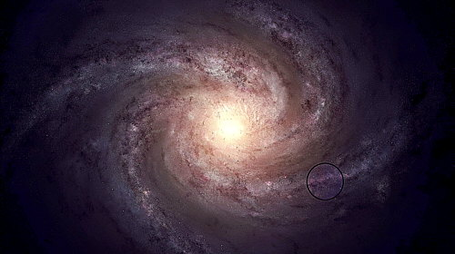
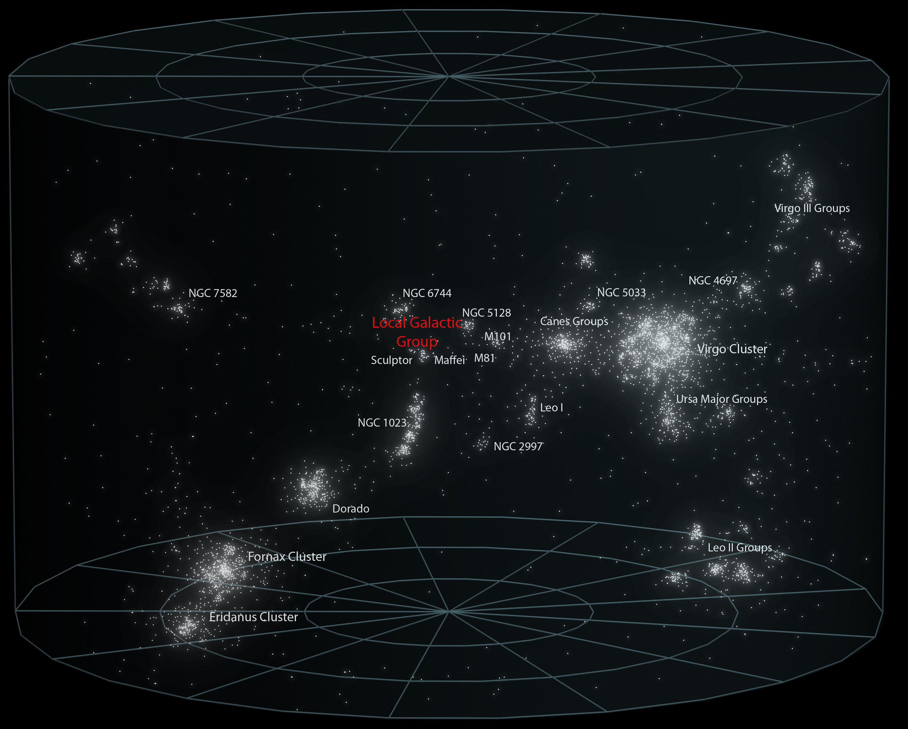

Bienvenido a "Astronomía para todos"
Bienvenidos a "Astronomía para todos", tu página dedicada al fascinante mundo de la astronomía. Si alguna vez te preguntaste qué hay más allá de nuestro planeta, si te maravilla la inmensidad del universo o si simplemente deseás explorar los misterios del cosmos, has llegado al lugar indicado. En "Astronomia para todos" vas a encontrar información accesible y apasionante sobre la astronomía, desde los fundamentos básicos hasta los descubrimientos más recientes. Nuestro objetivo es acercar el conocimiento astronómico a todos, sin importar tu nivel de experiencia. Preparate para embarcarte en un viaje cósmico, donde descubrirás galaxias distantes, planetas fascinantes, estrellas en explosión y mucho más. ¡Empecemos a explorar los secretos del universo juntos!

¿Qué es la Astronomía?
La astronomía es la ciencia que se encarga del estudio y comprensión del universo, sus componentes, estructuras y fenómenos celestes. Es una disciplina que ha sido fundamental tanto en la ciencia antigua como en la ciencia moderna, y su importancia radica en el profundo impacto que ha tenido en nuestra comprensión del mundo, del universo y de nuestro lugar en él.
Desde tiempos antiguos, la astronomía ha sido utilizada para explorar el cielo y comprender los movimientos de los astros. Civilizaciones como los egipcios, los babilonios y los mayas desarrollaron sistemas de observación y registro de los cuerpos celestes, estableciendo patrones y calendarios basados en sus movimientos. La astronomía fue esencial para la navegación, la agricultura, la astrología y el desarrollo de culturas antiguas.
En la ciencia moderna, la astronomía ha evolucionado enormemente gracias a los avances tecnológicos. Mediante el uso de telescopios, satélites y observatorios espaciales, los astrónomos han podido realizar descubrimientos trascendentales. Han revelado la existencia de planetas extrasolares (exoplanetas), agujeros negros, galaxias distantes y han estudiado la composición y evolución del universo. Además, la astronomía ha contribuido a campos científicos relacionados, como la astrofísica, la cosmología y la búsqueda de vida extraterrestre.
El estudio de las estrellas se remonta a miles de años atrás. Los primeros registros sistemáticos de observación estelar datan de la antigua Mesopotamia, alrededor del 3000 a.C. Sin embargo, la astronomía como ciencia formal y sistemática se desarrolló en la antigua Grecia, con figuras destacadas como Aristóteles, Hiparco y Ptolomeo. A partir de entonces, el estudio de las estrellas ha sido continuo y se ha ampliado en diferentes culturas y períodos históricos
Por estas razones, podemos decir que la Astronomía es una ciencia muy intrigante y maravillosa. Nos permite entender el lugar que ocupamos en el Cosmos y es capaz de brindarnos conocimiento y fotografías que superan nuestra imaginación
¿Dónde nos encontramos?
Nuestro pequeño planeta, llamado Tierra, se encuentra ubicada en la galaxia conocida como la Vía Láctea. Esta galaxia es una vasta estructura compuesta por cientos de miles de millones de estrellas, nubes de gas, polvo cósmico y sistemas planetarios. La Vía Láctea tiene una forma espiral, con brazos espirales que se extienden desde un núcleo central. Nuestro sistema solar, junto con la Tierra, se encuentra en uno de estos brazos espirales, conocido como el Brazo de Orión o el Brazo de Orión Local.
En esta imagen, en la parte inferior derecha, se puede ver demarcada la zona en donde se encuentra nuestro sistema solar
Nuestros Vecinos
Nuestra Vía Lactea forma parte de lo que se podria llamar un vecindario. Si nos alejamos más, podemos ver que nuestra galaxia forma parte de un conjunto más amplio conocido como el Grupo Local, que incluye varias galaxias vecinas, como Andrómeda y la Galaxia del Triángulo. A su vez, el Grupo Local es solo una pequeña parte de la inmensidad cósmica, que comprende miles de millones de galaxias dispersas en vastas estructuras conocidas como supercúmulos. Nuestro Grupo Local se encuentra dentro del Supercúmulo de Virgo, un supercúmulo que contiene alrededor de 100 grupos y cúmulos de galaxias, que está dominado por el cúmulo de Virgo, localizado cerca de su centro
